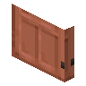
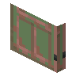
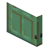

#dramaticdoors:categories/tall_everythingcopper_doors
物品标签 · 8 个已收录成员
标签成员 (8)

高铜门dramaticdoors:tall_ec_copper_door

斑驳的高铜门dramaticdoors:tall_ec_exposed_copper_door
 锈蚀的高铜门
锈蚀的高铜门dramaticdoors:tall_ec_weathered_copper_door氧化的高铜门
dramaticdoors:tall_ec_oxidized_copper_door
 高涂蜡铜门
高涂蜡铜门dramaticdoors:tall_ec_waxed_copper_door
 斑驳的高涂蜡铜门
斑驳的高涂蜡铜门dramaticdoors:tall_ec_waxed_exposed_copper_door

锈蚀的高涂蜡铜门dramaticdoors:tall_ec_waxed_weathered_copper_door
 氧化的高涂蜡铜门
氧化的高涂蜡铜门dramaticdoors:tall_ec_waxed_oxidized_copper_door
使用该标签的配方
无